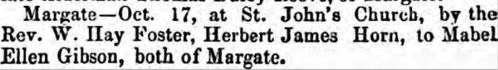
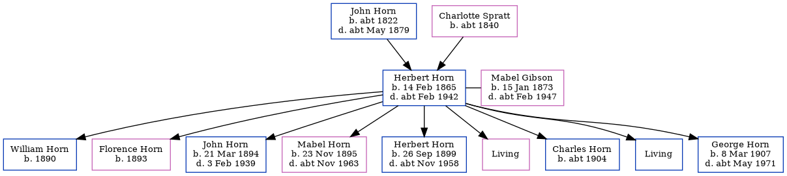

Herbert James Horn 1865 - c1942
[ Home ] | [ Calendar ] | [ Surnames Index ] | [ Family History ]A carter and the son of John Horn (an agricultural laborer) and Charlotte Spratt (a laundress)Herbert Horn, the first cousin three-times-removed on the father's side of Nigel Horne, was born in Northdown, Margate, Kent, England on Feb 14, 18651,2, was baptized in Margate, Kent, England on Mar 26, 1865 and also married Mabel Gibson (with whom he had 9 children: William, Florence, John Edwin Ernest, Mabel Ellen Frances, Herbert James Frederick, Kathleen Charlotte, Charles, James and George Francis, along with 3 surviving children) there at St John The Baptist's Church, on Oct 17, 18914.
Herbert spent all of his life in Kent, England. Throughout his life, he lived in several places around the county: at his birthplace on Apr 2, 18719; at Church Street in Margate on Apr 5, 18918; at 6 Grange Road in Margate on Mar 31, 19017; at 84 Byron Road in Margate on Apr 2, 19116; at 3 Princes Crescent in Margate in 19245; and at Iona, Nash Road in Margate on Sep 29, 19391.
He died c. Feb 1942 in Thanet, Kent, England3.
Parents
- John was born c. 1822
- Charlotte Anne was born c. 1840
Children
- William was born in 1890
- Florence was born in 1893
- John Edwin Ernest was born on Mar 21, 1894
- Mabel Ellen Frances was born on Nov 23, 1895
- Herbert James Frederick was born on Sep 26, 1899
- George Francis was born on Mar 8, 1907
Citations
- 1939 Register - Findmypast (was recorded at this address)
- England & Wales births 1837-2006 - Findmypast
- England & Wales deaths 1837-2007 - Findmypast
- England & Wales Marriages 1837-2005 - Findmypast
- According to the military record of his son, George Francis.
- 1911 Census for England & Wales - Findmypast (was age 46 and the head of the household)
- 1901 England, Wales & Scotland Census - Findmypast (was age 39 and the head of the household)
- 1891 England, Wales & Scotland Census - Findmypast (was age 26 and the head of the household)
- 1871 England, Wales & Scotland Census - Findmypast (was age 6 and the son of the head of the household)
Media
Thanet Advertiser 24 Oct 1891

1871 UK Census

Canterbury Marriages - GBPRS/CANT/M/97025029/1
England & Wales births 1837-2006 - BMD/B/1865/1/AZ/000625/054
1939 Register - TNA/R39/1752/1752G/010/06
England & Wales deaths 1837-2007 - BMD/D/1942/1/AZ/000532/091
England & Wales marriages 1837-2005 - BMD/M/1908/4/AZ/000186/190
Kent, Canterbury Archdeaconry marriages - GBPRS/CANT/M/97032599/1
1901 England, Wales & Scotland Census - GBC/1901/0007429434
1891 England, Wales & Scotland Census - GBC/1891/0005862201
England Births & Baptisms 1538-1975 - R_885523391
England Births & Baptisms 1538-1975 - R_885873591
Kent Baptisms - GBPRS/CANT/B/96222755
Family Tree
Generated by ged2site. Last updated on Nov 13, 2024